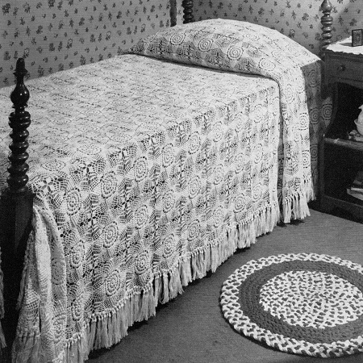
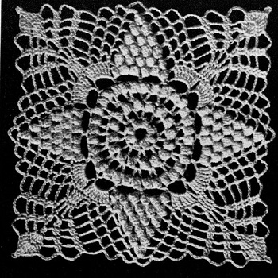

Snow White Bedspread Pattern
The Snow White crochet bedspread features a charming design inspired by the beloved fairytale character. The bedspread is crocheted using white or Cream crochet cotton, creating a luxurious and elegant look for your bedroom.
MATERIALS:
AMERICAN THREAD COMPANY "DE LUXE" CROCHET AND KNITTING COTTON, ARTICLE 346 OR "PURITAN" BEDSPREAD COTTON, ARTICLE 40 74-250 yd. Balls Ecru, White or Cream.
Each Motif measures about 6 inches.
198 Motifs 11 x 18 are required for Spread measuring about 66 x 108 inches without fringe.
Steel Crochet Hook No. 7.
MOTIF: Ch 10, join to form a ring, ch 3, 4 dc in ring, drop loop from hook, insert in 3rd st of ch, pick up loop and pull through, ch 1 to complete st (popcorn st) , * ch 2, popcorn st in same space, (popcorn st: 5 dc in ring, drop loop from hook, insert in 1st dc, pick up loop and pull through, ch 1 to complete st) repeat from * 6 times, ch 2, join in 1st popcorn st.
2nd Row: Sl st to loop, ch 6, dc in same space, * ch 3, 2 dc with ch 3 between in next loop, repeat from * all around, ch 3, join in 3rd st of ch.
3rd Row: Sl st to loop, ch 3 (always counts as part of 1st popcorn st) , popcorn st in same loop, * ch 2, popcorn st in next loop, repeat from * all around, ch 2, join in 1st popcorn st.
4th and 5th Rows: Repeat last 2 rows.
6th Row: Sl st to loop, * ch 8, skip next loop, sc in next loop, repeat from * all around, ch 8, join.
7th Row: Ch 3, * 3 popcorn sts with ch 2 between each popcorn st in each of the next 2 loops, ch 2, 8 trc in each of the next 2 loops, ch 2, repeat from * all around, join in 1st popcorn st.
8th Row: Sl st to loop, ch 3, ** 1 popcorn st in each of the 5 loops between popcorn sts of previous row with ch 2 between each popcorn st, ch 5, sc in next trc, * ch 5, skip next trc, sc in next trc, repeat from * once, ch 5, skip 1 trc, 1 trc in each of the next 4 trc, * ch 5, skip next trc, sc in next trc, repeat from * twice, ch 5, repeat from ** all around, join to 1st popcorn st.
9th Row: Sl st into loop, ch 3, ** 1 popcorn st in each of the 4 loops between popcorn sts of previous row with ch 2 between each popcorn st, * ch 5, sc in next loop, repeat from * twice, ch 5, trc in next trc, * ch 2, trc in next trc, repeat from * twice, ch 5, skip next loop, sc in next loop, * ch 5, sc in next loop, repeat from * once, ch 5, repeat from ** all around, join in 1st popcorn st.
10th Row: Sl st into loop, ch 3, ** 1 popcorn st in each of the 3 loops between popcorn sts of previous row with ch 2 between each popcorn st, * ch 5, sc in next loop, repeat from * twice, ch 5, 2 dc in next trc, * ch 3, 2 dc in next trc, repeat from * twice, ch 5, skip next loop, sc in next loop, * ch 5, sc in next loop, repeat from * once, ch 5, repeat from ** all around, join in 1st popcorn st.
11th Row: Sl st into loop, ch 3, ** 1 popcorn st in each of the 2 loops between popcorn sts of previous row with ch 2 between, * ch 5, sc in next loop, repeat from * twice, ch 5, 1 dc in each of the next 2 dc, ch 4, 1 dc in each of the next 2 dc, ch 4, 2 dc in next loop, * ch 4, 1 dc in each of the next 2 dc, repeat from * once, ch 5, skip next loop, sc in next loop, * ch 5, sc in next loop, repeat from * once,ch 5,repeat from** all around, join in 1st popcorn st.
12th Row: Sl st into loop, ch 3, ** 1 popcorn st in loop between popcorn sts of previous row, * ch 5, sc in next loop, repeat from * twice, ch 5, 1 dc in each of the next 2 dc, ch 4, 1 dc in each of the next 2 dc, ch 4, 2 dc, 1 trc in next dc, 1 trc, 2 dc in next dc, * ch 4, 1 dc in each of the next 2 dc, repeat from * once, ch 5, skip next loop, sc in next loop, * ch 5, sc in next loop, repeat from * once, ch 5, repeat from ** all around, join in 1st popcorn st.
13th Row: Sl st to center of loop, sc in same loop, ch 5, sc in next loop, ** ch 7, sc in next loop, ch 5, 1 dc in each of the next 2 dc, * ch 7, 1 dc in each of the next 2 dc, repeat from * once, 3 trc in next trc, ch 5, sl st in top of trc for picot, 3 trc in next trc, 1 dc in each of the next 2 dc, * ch 7, 1 dc in each of the next 2 dc, repeat from * once, ch 5, skip next loop, sc in next loop, ch 7, sc in next loop, * ch 5, sc in next loop, repeat from * twice, repeat from ** all around completing row to correspond, join in sc, break thread.
Work a 2nd motif in same manner joining to 1st motif in last row as follows:
Sl st to center of loop, sc in same loop, ch 5, sc in next loop, ch 7, sc in next loop, ch 5, 1 dc in each of the next 2 dc, * ch 7, 1 dc in each of the next 2 dc, repeat from * once, 3 trc in next trc, ch 2, sl st in corresponding picot of 1st motif, ch 2, complete picot, 3 trc in next trc of 2nd motif, 1 dc in each of the next 2 dc, * ch 3, sl st in corresponding loop of 1st motif, ch 3, 1 dc in each of the next 2 dc of 2nd motif, repeat from * once, ch 5, skip next loop of 2nd motif, sc in next loop, ch 3, sl st in corresponding loop of 1st motif, ch 3, sc in next loop of 2nd motif, * ch 2, sl st in corresponding loop of 1st motif, ch 2, sc in next loop of 2nd motif, repeat from * twice, ch 3, sl st in corresponding loop of 1st motif, ch 3, sc in next loop of 2nd motif, ch 5, skip next loop of 2nd motif, 1 dc in each of the next 2 dc, * ch 3, sl st in corresponding loop of 1st motif, ch 3, 1 dc in each of the next 2 dc of 2nd motif, repeat from * once, 3 trc in next trc, ch 2, sl st in corresponding picot of 1st motif, ch 2, complete picot and finish motif same as 1st motif, break thread.
Join 3rd motif to 2nd motif and 4th motif to 3rd and 1st motifs in same manner.
FRINGE: Cut 12 12-inch lengths, double in half, draw ends through loop and tighten. Repeat from beginning on 3 sides placing a fringe in each loop. Take 1/2 of one group of fringe and half of next group of fringe, knot together about 3/4 inch from 1st row of knots.

HOME